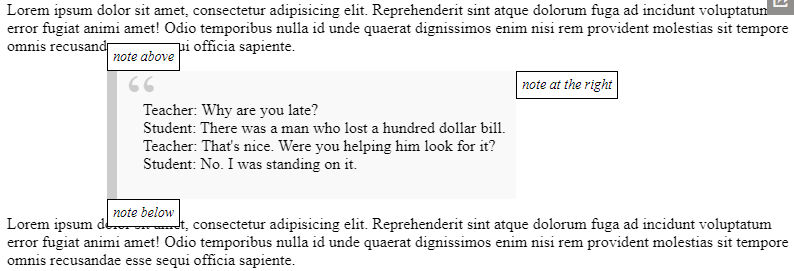
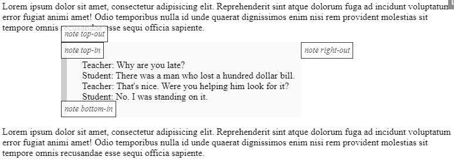

Координаты
Задачи
В ифрейме ниже располагается документ с зелёным «полем».
Используйте JavaScript, чтобы найти координаты углов, обозначенных стрелками.
В документе уже реализована функциональность, когда при клике на любом месте показываются соответствующие координаты.
Ваш код должен при помощи DOM получить четыре пары координат:
- верхний левый, внешний угол (это просто).
- нижний правый, внешний угол (тоже просто).
- верхний левый, внутренний угол (чуть сложнее).
- нижний правый, внутренний угол (есть несколько способов, выберите один).
Координаты, вычисленные вами, должны совпадать с теми, которые возвращаются по клику мыши.
P.S. Код должен работать, если у элемента другие размеры или есть рамка, без привязки к конкретным числам.
Решение:
1. const coords = elem.getBoundingClientRect();
const answer1 = [coords.left, coords.top];
2. const coords = elem.getBoundingClientRect();
const answer2 = [coords.right, coords.bottom];
3. const coords = elem.getBoundingClientRect();
const answer3 = [coords.left + field.clientLeft, coords.top + field.clientTop];
4. const coords = elem.getBoundingClientRect();
const answer4 = [
coords.right - parseInt(getComputedStyle(field).borderRightWidth),
coords.bottom - parseInt(getComputedStyle(field).borderBottomWidth)
];
Создайте функцию positionAt(anchor, position, elem), которая позиционирует элемент elem в зависимости от значения свойства position рядом с элементом anchor.
Аргумент position – строка с одним из 3 значений:
"top"– расположитьelemпрямо надanchor"right"– расположитьelemнепосредственно справа отanchor"bottom"– расположитьelemпрямо подanchor
Она используется внутри функции showNote(anchor, position, html), которая уже есть в исходном коде задачи. Она создаёт и показывает элемент-«заметку» с текстом html на заданной позиции position рядом с элементом anchor.
Демо заметки:
Решение:
function positionAt(anchor, position, elem) {
const anchorCoords = anchor.getBoundingClientRect();
switch (position) {
case "top":
elem.style.left = anchorCoords.left + "px";
elem.style.top = anchorCoords.top - elem.offsetHeight + "px";
break;
case "right":
elem.style.left = anchorCoords.left + anchor.offsetWidth + "px";
elem.style.top = anchorCoords.top + "px";
break;
case "bottom":
elem.style.left = anchorCoords.left + "px";
elem.style.top = anchorCoords.top + anchor.offsetHeight + "px";
break;
}
}
Измените код решения предыдущего задания так, чтобы элемент заметки использовал свойство position:absolute вместо position:fixed.
Это предотвратит расхождение элементов при прокрутке страницы.
Используйте решение предыдущего задания для начала. Чтобы проверить решение в условиях с прокруткой, добавьте стиль элементу ‹body style="height: 2000px"›‹/body›.
Решение:
function getCoords(elem) {
const box = elem.getBoundingClientRect();
return {
top: box.top + pageYOffset,
left: box.left + pageXOffset
};
}
function positionAt(anchor, position, elem) {
const anchorCoords = getCoords(anchor);
switch (position) {
case "top":
elem.style.left = anchorCoords.left + "px";
elem.style.top = anchorCoords.top - elem.offsetHeight + "px";
break;
case "right":
elem.style.left = anchorCoords.left + anchor.offsetWidth + "px";
elem.style.top = anchorCoords.top + "px";
break;
case "bottom":
elem.style.left = anchorCoords.left + "px";
elem.style.top = anchorCoords.top + anchor.offsetHeight + "px";
break;
}
}
Усовершенствуйте решение предыдущего задания Покажите заметку около элемента (абсолютное позиционирование): научите функцию positionAt(anchor, position, elem) вставлять elem внутрь anchor.
Новые значения для аргумента position:
top-out,right-out,– работают так же, как раньше, они вставляют elemсверху/справа/снизуanchor.top-in,right-in,bottom-in– вставляютelemвнутрьanchor: приклеивают его к верхнему/правому/нижнему краю.
Например:
- // показывает заметку поверх цитаты
- positionAt(blockquote, "top-out", note);
- // показывает заметку внутри цитаты вблизи верхнего края элемента
- positionAt(blockquote, "top-in", note);
Результат:
Решение:
function positionAt(anchor, position, elem) {
const anchorCoords = getCoords(anchor);
switch (position) {
case "top-out":
elem.style.left = anchorCoords.left + "px";
elem.style.top = anchorCoords.top - elem.offsetHeight + "px";
break;
case "right-out":
elem.style.left = anchorCoords.left + anchor.offsetWidth + "px";
elem.style.top = anchorCoords.top + "px";
break;
case "bottom-out":
elem.style.left = anchorCoords.left + "px";
elem.style.top = anchorCoords.top + anchor.offsetHeight + "px";
break;
case "top-in":
elem.style.left = anchorCoords.left + "px";
elem.style.top = anchorCoords.top + "px";
break;
case "right-in":
elem.style.width = '150px';
elem.style.left = anchorCoords.left + anchor.offsetWidth - elem.offsetWidth + "px";
elem.style.top = anchorCoords.top + "px";
break;
case "bottom-in":
elem.style.left = anchorCoords.left + "px";
elem.style.top = anchorCoords.top + anchor.offsetHeight - elem.offsetHeight + "px";
break;
}
}